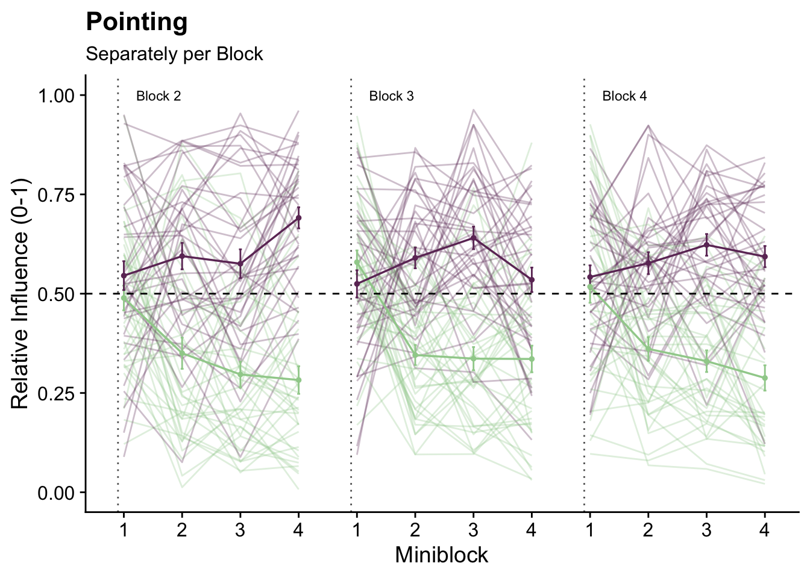
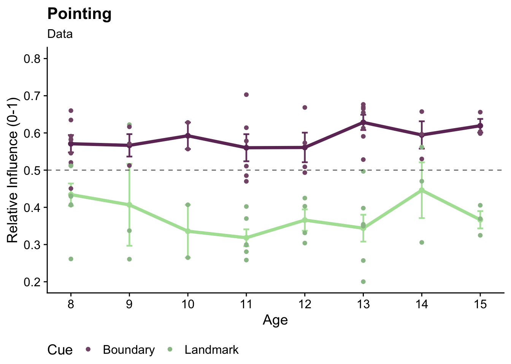
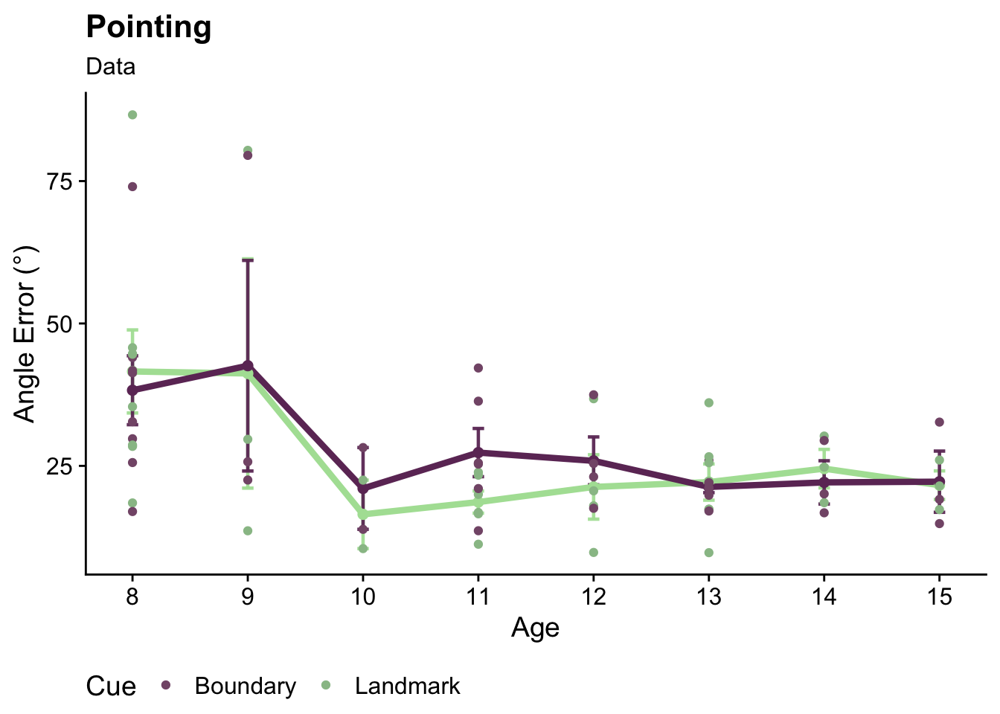
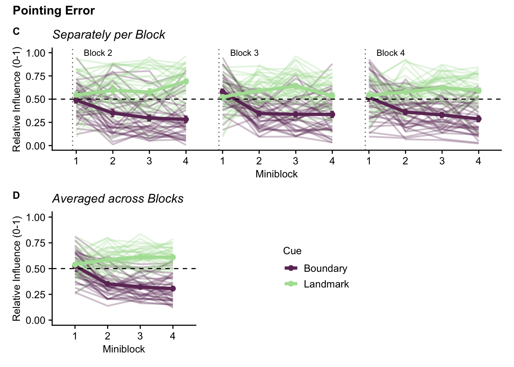

5 Angle estimation analysis
5.1 Set up
Packages used for data analysis
library(lme4)
library(sjPlot)
library(tidyverse)
library(broom)
library(ggsignif)
library(patchwork)
library(gghalves)
library(cowplot)
library(scico)
library(Cairo)
library(ggnewscale)
library(here)
library(effsize)
library(circular)
library(grateful)Functions written for this analysis
#function circleFull() generates locations of 100 points that are in shape of circle
#used for mapping out the arena in graphs
circleFull <- function(center = c(0,0), r = 27.5, npoints = 100){
tt <- seq(0,2*pi,length.out = npoints)
xx <- center[1] + r * cos(tt)
yy <- center[2] + r * sin(tt)
return(data.frame(x = xx, y = yy))
}
circleSome <- function(centerX, centerY, r = 27.5, npoints = 100, a1, a2){
tt <- seq(a1,a2,length.out = npoints)
xx <- centerX + r * cos(tt)
yy <- centerY + r * sin(tt)
return(data.frame(x = xx, y = yy))
}Loading in the full dataset
Sum_all <- read_delim(here("data" ,"Sum.txt"), delim = " ", col_names = TRUE, col_types = "fdddddddfdcddddddddddddddddddddddddddddddddddddddd") Creating a list of subject IDs from the full dataset
Formatting for results output
5.1.1 Exclusion criteria
Participants are excluded based on positional memory performance in block 1 which is quantified using memory scores. To be included in the analysis, participant’s memory scores from block 1 need to be significantly greater than the chance level 0.5.
exclusion <- c() #creating empty list that will contain the subject IDs that will be excluded
for (i_sub in subjects) {
score <- t.test(subset(Sum_all, ID==i_sub & block==1)$memoryScoreTraj,
mu=0.5, alternative = "greater") %>% tidy() #one-tailed t.test of block 1 memory scores against chance level 0.5
if (score$p.value > 0.05) {
exclusion <- c(exclusion, i_sub)
Sum_all <- filter(Sum_all, ID != i_sub)
}
}- number of participants excluded: 2
- new overall sample size: 36
5.1.2 Timeout session
Identifying and filtering timeout sessions i.e. trials with time over 59 seconds between trial beginning and angle estimation
#summary of timeout trials
timeout <- filter(Sum_all, secTrialEst > 59)
#filtering timeout trials as they do not include location estimation
Sum_all <- filter(Sum_all, secTrialEst < 59)- number of timeout trials: 5
- number of participants with timeout trials: 5
- average number of timeout trials per participant with timeout trials: 1
- average number of timeout trials per participant: 0.1315789
5.2 Descriptives
Reaction Time
We looked into reaction time (seconds between end of target object display and angle estimation).
#average RT
reaction_time_dat <- Sum_all %>%
group_by(ID, age) %>%
summarise(estResponse = mean(secTrialEst-3.5), .groups = "drop") #discounting 3.5s for a target display at the beginning of each trial when participants are locked in their position
#graph showing distribution, 1 point per participant
ggplot(reaction_time_dat, aes(x=0, y=estResponse)) +
geom_half_violin(aes(x=-0.05), fill=scico(1, palette = "acton", begin = 0.45), alpha =0.5, color=NA) +
geom_point(aes(x=0.105, color=age), position = position_jitter(width =0.05, height = 0), shape=16, size = 2) +
scale_color_scico(palette = "acton") +
geom_boxplot(width = .08, outlier.shape = NA) +
theme_cowplot() +
ylab('RT') + xlab('') +
theme(axis.text.x = element_blank(),
axis.ticks.x = element_blank(),
aspect.ratio =1,
plot.title = element_text(face="italic", size=12)) +
scale_y_continuous(limits=c(0, 15))#actual average RT and sd
reaction_time <- summarise(reaction_time_dat, mean = mean(estResponse), sd=sd(estResponse), min=min(estResponse), max=max(estResponse))The average reaction time in pointing task was 6.601 seconds (sd = 2.514).
5.3 Block 1 Performance
This subsection of the analysis aims to answer whether the participants completed the basic task according to the instructions before any manipulation was introduced. Did they understand how to rotate and indicate their angle estimation?
5.3.1 Raw Angle Error Visualization
First, let’s look on how participants performed by examining the signed angle error distribution. 0° as “correct angle”.
g_anglB1 <- ggplot(Sum_all %>% filter(block == 1), aes(x = angleError)) +
# creating histogram to see the distribution
geom_histogram(binwidth = 10, boundary=0, fill = scico(1, palette = "lajolla", begin=0.5), color= "black", size = .25) +
# rounding the histogram to 360° circle
coord_polar(start=pi) +
# specifying the limits and breaks
scale_x_continuous(limits = c(-180,180),
breaks = seq(-180, 180, by = 45),
minor_breaks = seq(-180, 180, by = 15)) +
# background/plot style
theme_cowplot() +
background_grid() +
# changing labels and title
labs(x = "Pointing Error (°)", y = "Count", title = "Signed Distribution of Error") +
theme(axis.title.y = element_text(hjust = 0.7))
g_anglB1
5.3.2 Angle Error Stats
Data summarizing for each participant for block 1.
summaryBlock1_Angle <- Sum_all %>%
filter(block==1) %>%
group_by(ID, block) %>%
summarise(angleErr = mean(abs(angleError)), .groups="drop") T-Test
We took 90° as a threshold of randomness (possible absolute angle error 0-180°). To see whether participants pointed better than on average randomly, we ran a one sample, one-tailed t-test of their average absolute angle error in block 1 against 90. To see the effect size we calculated cohen’s d.
b1a_stats <- t.test(summaryBlock1_Angle$angleErr, mu = 90, alternative = "less") %>% tidy()
d <- cohen.d(d=summaryBlock1_Angle$angleErr, f=NA, mu=90)
b1a_stats$d <- d$estimate
b1a_stats$dCI_low <- d$conf.int[[1]]
b1a_stats$dCI_high <- d$conf.int[[2]]Block 1 absolute angle error against 90 t-test results:
t(35)= -34.38, p<0.001, d=-5.73, 95% CI [-7.26, -4.2]
Graph
The graph below shows the average absolute angle error in block 1 for each participant and consequentially the distribution of these values.
g_errB1 <- ggplot(summaryBlock1_Angle, aes(x=block, y=angleErr)) +
# violin plot
geom_half_violin(aes(x=block-0.05), fill=scico(1, palette= "lajolla", begin = 0.45), alpha =0.5, color=NA) +
# single subject data points (1 per participant) with horizontal jitter
geom_point(aes(x=block+0.07), position = position_jitter(width =0.02, height = 0), shape=16, size = 1) +
# boxplot (median, quartiles)
geom_boxplot(width = .05, outlier.shape = NA) +
# adding plot of mean and SEM
stat_summary(fun = mean, geom = "point", size=1, shape = 16,
position = position_nudge(-.05), colour = "black") +
stat_summary(fun.data = mean_se, geom = "errorbar",
position = position_nudge(-.05), colour = "black", width = 0, size = 0.5) +
geom_hline(yintercept = 90, linetype=2) +
annotate("text", label = "90°", x = 1.3, y = 85, size = 3) +
labs(y='Pointing Error (°)', x=' ', title = "Average Absolute Error") +
theme_cowplot() +
theme(axis.title = element_text(size=10), axis.text.x = element_blank(),
axis.ticks.x = element_blank(), axis.text.y = element_text(size=10))
#show graph
g_errB1
Assembly of block 1 graphs for pointing task.
angleEst_B1 <- g_errB1 + g_anglB1 &
# unifying aesthetics
theme(axis.title = element_text(size=12), plot.title = element_text(face="italic", size=12)) &
# assembly title
plot_annotation(title = 'Pointing Errors',
theme = theme(plot.title = element_text(size = 14, face="bold")))
# saving as pdf and png
ggsave(file="AngleErrors_B1.pdf", plot=angleEst_B1,
units = "cm", width = 15.9, height = 10, dpi = "retina", device = cairo_pdf, path = here("figures"))
ggsave(file="AngleErrors_B1.png", plot=angleEst_B1,
units = "cm", width = 15.9, height = 10, dpi = "retina", device = "png", path = here("figures"))
angleEst_B1Assembly of block 1 graphs for positional memory and pointing task.
block1_graphs <- memory_B1 / angleEst_B1 &
# unifying aesthetics
theme(axis.title = element_text(size=10), axis.text = element_text(size=10),
plot.title = element_text(face="italic", size=12),
legend.text = element_text(size=10), legend.title = element_text(size=10),
plot.tag = element_text(size = 10, face="bold")) &
# assembly title, subtitle and tags
plot_annotation(title = 'Block 1 Performance',
subtitle = ' \nPositional Memory',
theme = theme(plot.title = element_text(size = 14, face="bold"), plot.subtitle = element_text(size=12, face="bold")),
tag_levels = 'A')
#saving as pdf and png
ggsave(file="B1.pdf", plot=block1_graphs,
units = "cm", width = 15, height = 16, dpi = "retina", device = cairo_pdf, path = here("figures"))
ggsave(file="B1.png", plot=block1_graphs,
units = "cm", width = 15, height = 16, dpi = "retina", device = "png", path = here("figures"))
block1_graphs5.4 Cue Differences
Next we wanted to investigate whether the participants followed the cues in block 2-4 after landmark and landmark-dependent object movement. Also, is there performance difference between landmark- vs boundary-dependent objects?
5.4.1 Relative Influence
To evaluate, which cue participants are using to remember the direction of target object we used relative influence which was created and first used by Doeller, King and Burgess (2008). However, we were the first to use this measurement for angle estimation/pointing. The graph below shows the calculation.
Explanation Graph
#loading a data from block 2-4 for a single participant
graph_sub <- filter(Sum_all, ID == i_sub & block == 2 & trial==5)
# generating points that will form arena boundary
circle <- circleFull()
# generating points that will form angle difference between estimated angle and angle predicted by boundary
angle1 <- circleSome(centerX= graph_sub$charX, centerY= graph_sub$charY, r=15, a1= 1.5707963268-rad(graph_sub$estAngle), a2=1.5707963268-rad(graph_sub$boundaryAngle))
# generating points that will form angle difference between estimated angle and angle predicted by landmark
angle2 <- circleSome(centerX= graph_sub$charX, centerY= graph_sub$charY, r=10, a1= 1.5707963268-rad(graph_sub$estAngle), a2=1.5707963268-rad(graph_sub$landmarkAngle))
relativeAng_graph <- ggplot(data=graph_sub) +
# location predicted by landmark
geom_point(aes(x=landmarkCuePosX, y=landmarkCuePosY, color="Angle Predicted by Landmark"), size = 1.5, alpha=0.3) +
# line visualizing the angle from participant's position to the object location predicted by landmark
geom_segment(aes(x=charX, y=charY, xend= landmarkCuePosX, yend=landmarkCuePosY,
color="Angle Predicted by Landmark"), alpha=.9) +
# adding aL label
annotate("text", label="aL", x=-3, y=2, size=4, color="#C6F1B1", fontface =2) +
# location predicted by boundary
geom_point(aes(x=boundaryCuePosX, y=boundaryCuePosY, color="Angle Predicted by Boundary"), size = 1.5, alpha=0.3) +
# line visualizing the angle from participant's position to the object location predicted by boundary
geom_segment(aes(x=boundaryCuePosX, y=boundaryCuePosY, xend= charX, yend= charY,
color="Angle Predicted by Boundary"), alpha=.9) +
# adding dB label
annotate("text", label="aB", x=-4.5, y=-5, size=4, color="#592758", fontface =2) +
#participants location
geom_point(aes(x=charX, y=charY, color = "Estimated Angle"), size = 2.5) +
annotate("text", label="Participant's location", x= -12, y = 12, size=3.5, color= "red") +
#landmark location
geom_point(aes(x=landmarkX, y=landmarkY), shape = 15, color = "#94A98F", size=3) +
annotate("text", label="Landmark", x= 15.5, y = 8.9, size=3.5, color= "#94A98F") +
#estimated angle
geom_spoke(mapping =aes(x=charX, y=charY, angle = 1.5707963268-rad(estAngle), radius =20), color="red", linetype = 1, alpha=0.8) +
# angle difference between angle predicted by boundary and estimated angle
geom_path(data=angle1, aes(x,y, color="Angle Predicted by Boundary"))+
# angle difference between angle predicted by landmark and estimated angle
geom_path(data=angle2, aes(x,y,color="Angle Predicted by Landmark"))+
# creating arena boundary
geom_path(data=circle, aes(x, y)) +
# aesthetical changes
theme_cowplot() +
theme(aspect.ratio=1,
axis.title = element_text(size=10), axis.text = element_text(size=10),
plot.title = element_text(size=12), plot.subtitle = element_text(size = 11)) +
# changing labels and title
labs(title = "Relative Influence Calculation for Angle Estimation",
subtitle = paste("aL / (aL + aB) ",
sprintf("Angle Relative Influence: %s ", round(graph_sub$relativeAngle, 2)), sep="\n"),
x= 'X (vm)', y= 'Y (vm)') +
# specifying colors manually
scale_color_manual(name = " ",
values= c("Angle Predicted by Boundary" = "#592758", "Angle Predicted by Landmark" = "#C6F1B1",
"Estimated Angle" = "red"))
# saving graph as pdf and png
ggsave(filename="relative_angle_visual.pdf", plot=relativeAng_graph, units = "cm", width = 15, height = 11,
dpi = "retina", device = cairo_pdf, path = here("figures"))
ggsave("relative_angle_visual.png", plot=relativeAng_graph, units = "cm", width = 15, height = 11,
dpi = "retina", device = "png", path = here("figures"))
# show the graph
relativeAng_graph
Let’s subset and summarize data for blocks 2-4.
subset_RA <- Sum_all %>%
filter(block!=1) %>%
select(ID, age, age_c, block, miniblock, mini, objectTrial, trial, cue, cueMM, angleError, relativeAngle, cueDissonanceAngle)
relativeAngleBlocks <- subset_RA %>%
group_by(ID, cue, age) %>%
summarise(angleErr = mean(abs(angleError)),
relativeAng = mean(relativeAngle),
raSD = sd(relativeAngle),
cueDisA = mean(cueDissonanceAngle),
.groups="drop")T-Tests
As score 0.5 points towards angle between the angle predicted by landmark and angle predicted by boundary, we ran a one sample, one tail t-test to test whether the relative scores for landmark-dependent objects are less than 0.5.
landmarkRA_stats <- t.test(subset(relativeAngleBlocks, cue=="landmark")$relativeAng, mu = 0.5, alternative = "less") %>% tidy()
d <- cohen.d(d=subset(relativeAngleBlocks, cue=="landmark")$relativeAng, f=NA, mu = 0.5)
landmarkRA_stats$d <- d$estimate
landmarkRA_stats$dCI_low <- d$conf.int[[1]]
landmarkRA_stats$dCI_high <- d$conf.int[[2]]Landmark-dependent objects’ RA against 0.5 t-test results:
t(35)= -7.63, p<0.001, d=-1.27, 95% CI [-2.01, -0.53]
After we ran a one sample, one tail t-test to test whether the relative scores for boundary-dependent objects are higher than 0.5.
boundaryRA_stats <- t.test(subset(relativeAngleBlocks, cue=="boundary")$relativeAng, mu = 0.5, alternative = "greater") %>% tidy()
d <- cohen.d(d=subset(relativeAngleBlocks, cue=="boundary")$relativeAng, f=NA, mu = 0.5)
boundaryRA_stats$d <- d$estimate
boundaryRA_stats$dCI_low <- d$conf.int[[1]]
boundaryRA_stats$dCI_high <- d$conf.int[[2]]Boundary-dependent objects’ RA against 0.5 t-test results:
t(35)= 7.87, p<0.001, d=1.31, 95% CI [0.57, 2.06]
We also tested these two groups against each other to see if the scores are significantly different.
RA_stats <- t.test(subset(relativeAngleBlocks, cue=="boundary")$relativeAng,
subset(relativeAngleBlocks, cue=="landmark")$relativeAng,
paired = TRUE) %>% tidy()
d <- cohen.d(subset(relativeAngleBlocks, cue=="boundary")$relativeAng,
subset(relativeAngleBlocks, cue=="landmark")$relativeAng,
paired=TRUE)
RA_stats$d <- d$estimate
RA_stats$dCI_low <- d$conf.int[[1]]
RA_stats$dCI_high <- d$conf.int[[2]]Boundary-dependent objects’ RA vs landmark-dependent objects’ RA t-test results:
t(35)= 9.38, p<0.001, d=2.55, 95% CI [1.43, 3.67]
Graph
This difference in relative influence scores between boundary-dependent objects and landmark-dependent objects is visualized in a graph below.
rel_InfAng <- ggplot(relativeAngleBlocks, aes(x=cue, y=relativeAng)) +
# violin plots
gghalves::geom_half_violin(data=relativeAngleBlocks %>% filter(cue=="landmark"),
position=position_nudge(+0.2), aes(fill=cue),alpha =0.7, color=NA, side="r") +
gghalves::geom_half_violin(data=relativeAngleBlocks %>% filter(cue=="boundary"),
position=position_nudge(-0.2), aes(fill=cue),alpha =0.7, color=NA, side="l") +
# scico palette tokyo
scale_fill_scico_d(palette = 'tokyo', begin=0.15, end=0.85) +
# single subject data points (1 per participant)
geom_point(shape=16, size = 1) +
# line connecting individual participants' values
geom_line(aes(group=ID), alpha=0.5) +
# bowplot distribution
geom_boxplot(data=relativeAngleBlocks %>% filter(cue=="landmark"),
position=position_nudge(+0.1), width = .1, outlier.shape = NA) +
geom_boxplot(data= relativeAngleBlocks %>% filter(cue=="boundary"),
position=position_nudge(-0.1), width = .1, outlier.shape = NA) +
# adding plot of mean and SEM
stat_summary(data=relativeAngleBlocks %>% filter(cue=="landmark"),
position=position_nudge(+0.2), fun = mean, geom = "point", size=1, shape = 16, colour = "black") +
stat_summary(data=relativeAngleBlocks %>% filter(cue=="landmark"),
position=position_nudge(+0.2), fun.data = mean_se, geom = "errorbar", colour = "black", width = 0, size = 0.5) +
stat_summary(data=relativeAngleBlocks %>% filter(cue=="boundary"),
position=position_nudge(-0.2), fun = mean, geom = "point", size=1, shape = 16, colour = "black") +
stat_summary(data=relativeAngleBlocks %>% filter(cue=="boundary"),
position=position_nudge(-0.2), fun.data = mean_se, geom = "errorbar", colour = "black", width = 0, size = 0.5) +
# background setting
theme_cowplot() +
# changing axis labels and title
labs(x = " ", y = "",
title = "Pointing") +
# visualizing the significance levels of the t-test
geom_signif(comparisons = list(c("landmark", "boundary")), test="t.test",
test.args=list(alternative = "two.sided", paired=TRUE),
map_signif_level = TRUE, tip_length = 0, extend_line = 0.045, y_position = 0.82) +
# adding annotation of significance level of individual t-tests
annotate("text", label="***", size=3, y=0.75, x=0.9, fontface =2) +
annotate("text", label="***", size=3, y=0.15, x=2.1, fontface =2) +
# adding line at 0.5 (not-following either cue)
geom_hline(yintercept=0.5, linetype=2, alpha=0.6) +
# axis labels, limits and breaks
scale_x_discrete(labels = c('Boundary', 'Landmark')) +
scale_y_continuous(limits=c(0.1, 0.9), breaks = c(0.1,0.2,0.3,0.4,0.5,0.6,0.7,0.8,0.9))
ggsave("relativeInfluenceAng.pdf", plot=rel_InfAng,
units = "cm", width = 15, height = 12, dpi = "retina", device = cairo_pdf, path = here("figures"))
ggsave("relativeInfluenceAng.png", plot=rel_InfAng,
units = "cm", width = 15, height = 12, dpi = "retina", device = "png", path = here("figures"))
rel_InfAng
Assembly of relative influence plots for both positional memory and pointing.
relative_infl <- rel_Inf + rel_InfAng &
theme(axis.title = element_text(size=10), axis.text = element_text(size=10),
plot.title = element_text(face="italic", size=12),
plot.tag = element_text(size = 10, face="bold"),
legend.position = "none") &
plot_annotation(title = "Relative Influence",
theme = theme(plot.title = element_text(size = 12, face="bold")),
tag_levels = 'A')
ggsave("relativeInfluenceAll.pdf", plot=relative_infl,
units = "cm", width = 15.9, height = 7.3, dpi = "retina", device = cairo_pdf, path = here("figures"))
ggsave("relativeInfluenceAll.png", plot=relative_infl,
units = "cm", width = 15.9, height = 7.3, dpi = "retina", device = "png", path = here("figures"))
relative_inflMixed Model
As a first step towards building a full mixed effects model, we tested a simpliest version with only cue as a fixed effect and a random slope and random intercepts for participants. We did not use cue as a factor but in a recoded version of landmark = -1 and boundary = 1.
#formula
formulaCue <- "relativeAngle ~ cueMM + (1+cueMM|ID)"
#model
modelCueAngle <- lme4::lmer(formula = formulaCue, data=subset_RA)
tab_model(modelCueAngle,
show.p = FALSE, show.se=TRUE, show.icc=FALSE,
digits = 4, digits.re = 4,
pred.labels = c("Intercept", "Cue"),
dv.labels = c("Realtive Influence"),
string.ci = "Conf. Int (95%)",
string.se = "SE",
CSS = css_theme("cells")) | Realtive Influence | |||
|---|---|---|---|
| Predictors | Estimates | SE | Conf. Int (95%) |
| Intercept | 0.4814 | 0.0080 | 0.4656 – 0.4972 |
| Cue | 0.1043 | 0.0111 | 0.0826 – 0.1261 |
| Random Effects | |||
| σ2 | 0.0664 | ||
| τ00 ID | 0.0009 | ||
| τ11 ID.cueMM | 0.0030 | ||
| ρ01 ID | -0.7325 | ||
| N ID | 36 | ||
| Observations | 1704 | ||
| Marginal R2 / Conditional R2 | 0.134 / 0.183 | ||
To test, whether cue is a significant predictor we ran a likelihood ratio test comparing our simpliest model and a model containing only random effects.
#control model without cue as a predictor
formulaControl <- "relativeAngle ~ 1 + (1+cueMM|ID)"
modelCueControl <- lme4::lmer(formula = formulaControl, data=subset_RA)
#likelihood ratio test
ratioCueAngle <- anova(modelCueAngle, modelCueControl) %>% tidy()## refitting model(s) with ML (instead of REML)## Warning in tidy.anova(.): The following column names in ANOVA output were not recognized or transformed: npar\(\chi^{2}\)(1) = 45.233, p<0.001
5.4.2 Angle Error Difference
Paired, two-tailed t-test to see if the angle error differs between trials with landmark-dependent and boundary-dependent objects.
angCue_stats <- t.test(subset(relativeAngleBlocks, cue=="boundary")$angleErr,
subset(relativeAngleBlocks, cue=="landmark")$angleErr,
paired = TRUE) %>% tidy()
d <- cohen.d(subset(relativeAngleBlocks, cue=="boundary")$angleErr,
subset(relativeAngleBlocks, cue=="landmark")$angleErr,
paired=TRUE)
angCue_stats$d <- d$estimate
angCue_stats$dCI_low <- d$conf.int[[1]]
angCue_stats$dCI_high <- d$conf.int[[2]]Boundary-dependent objects’ angle error vs landmark-dependent objects’ angle error t-test results:
t(35)= 0.79, p= 0.434, d=0.08, 95% CI [-0.12, 0.28]
Graph below visualizes the lack of difference.
cue_Ang <- ggplot(relativeAngleBlocks, aes(x=cue, y= angleErr)) +
#violin plots
gghalves::geom_half_violin(data=relativeAngleBlocks %>% filter(cue=="landmark"),
position=position_nudge(+0.2), aes(fill=cue),alpha =0.7, color=NA, side="r") +
gghalves::geom_half_violin(data=relativeAngleBlocks %>% filter(cue=="boundary"),
position=position_nudge(-0.2), aes(fill=cue),alpha =0.7, color=NA, side="l") +
# setting scico palette tokyo as a fill for violin plots
scale_fill_scico_d(palette = 'tokyo', begin=0.15, end=0.85) +
# single subject data points (1 per participant)
geom_point(shape=16, size = 1) +
# line connecting individual participants' values
geom_line(aes(group=ID), alpha=0.5) +
# boxplots
geom_boxplot(data=relativeAngleBlocks %>% filter(cue=="landmark"),
position=position_nudge(+0.1), width = .1, outlier.shape = NA) +
geom_boxplot(data=relativeAngleBlocks %>% filter(cue=="boundary"),
position=position_nudge(-0.1), width = .1, outlier.shape = NA) +
# adding plot of mean and SEM
stat_summary(data=relativeAngleBlocks %>% filter(cue=="landmark"),
position=position_nudge(+0.2), fun = mean, geom = "point", size=1, shape = 16, colour = "black") +
stat_summary(data=relativeAngleBlocks %>% filter(cue=="landmark"),
position=position_nudge(+0.2), fun.data = mean_se, geom = "errorbar", colour = "black", width = 0, size = 0.5) +
stat_summary(data=relativeAngleBlocks %>% filter(cue=="boundary"),
position=position_nudge(-0.2), fun = mean, geom = "point", size=1, shape = 16, colour = "black") +
stat_summary(data=relativeAngleBlocks %>% filter(cue=="boundary"),
position=position_nudge(-0.2), fun.data = mean_se, geom = "errorbar", colour = "black", width = 0, size = 0.5) +
# visualizing the significance level of the t-test
geom_signif(comparisons = list(c("landmark", "boundary")), test="t.test",
test.args=list(alternative = "two.sided", paired=TRUE),
map_signif_level = TRUE, tip_length = 0, extend_line = 0.045, y_position = 92, textsize=2.75) +
# background setting
theme_cowplot() +
# changing axis labels and title
labs(x = " ", y = "Pointing Error (°)",
title = "Pointing") +
# changing axis limits, breaks and values
scale_x_discrete(labels = c('Boundary', 'Landmark')) +
scale_y_continuous(breaks = c(25, 50, 75, 100), limits = c(9,100))
ggsave("angleError.pdf", plot=cue_Ang,
units = "cm", width = 15.9, height = 12, dpi = "retina", device = cairo_pdf, path = here("figures"))
ggsave("angleError.png", plot=cue_Ang,
units = "cm", width = 15.9, height = 12, dpi = "retina", device = "png", path = here("figures"))
cue_Ang
Assembling plots with raw error for both positional memory and pointing.
cue_Diff <- cue_Dist + cue_Ang &
theme(axis.title = element_text(size=10), axis.text = element_text(size=10),
plot.title = element_text(face="italic", size=12),
plot.tag = element_text(size = 10, face="bold"),
legend.position = "none") &
plot_annotation(title = "Raw Performance Differences",
theme = theme(plot.title = element_text(size = 12, face="bold")),
tag_levels = 'A')
ggsave("cueDiffAll.pdf", plot=cue_Diff,
units = "cm", width = 15.9, height = 8.2, dpi = "retina", device = cairo_pdf, path = here("figures"))
ggsave("cueDiffAll.png", plot=cue_Diff,
units = "cm", width = 15.9, height = 8.2, dpi = "retina", device = "png", path = here("figures"))
cue_Diff5.5 Miniblocks Learning
5.5.1 Graphs
The graph below shows the relative influence scores averaged for each miniblock in block 2-4 (averaging over 6 scores for each miniblock)
summary_miniblock_A <- subset_RA %>%
group_by(ID, miniblock, cue, age) %>%
summarise(relativeAng = mean(relativeAngle),
raSD = sd(relativeAngle),
cueDisA = mean(cueDissonanceAngle),
.groups = "drop")
g_miniAng <- ggplot(summary_miniblock_A, aes(miniblock, relativeAng, group=interaction(cue, ID), color=cue)) +
geom_line(size=0.5, alpha = 0.3) +
stat_summary(fun.data=mean_se, aes(group=cue), geom="errorbar", width=0.05) +
stat_summary(fun=mean, aes(group=cue), geom="line", size = 0.6) +
stat_summary(fun=mean, aes(group=cue), geom="point", size=1) +
geom_hline(yintercept = 0.5, linetype = 2) +
theme_cowplot() +
labs(x= "Miniblock", y = "Relative Influence (0-1)", subtitle = "Averaged across \nBlocks", title= " ", color = "Cue") +
theme(axis.title.y = element_blank()) +
scale_color_scico_d(palette = 'tokyo',begin=0.75, end=0.2, labels = c("Landmark", "Boundary")) +
scale_y_continuous(breaks = c(0, 0.25, 0.5, 0.75, 1), limits = c(0,1)) +
scale_x_continuous(limits = c(0.5, 4.5), breaks = c(1,2,3,4)) +
theme(legend.position = "none")
g_miniAngThe graph below shows the relative influence scores for each miniblock throughout block 2-4 (averaging only over 2 scores per miniblock)
#data summarizing
summary_objectTrial_A <- subset_RA %>%
group_by(ID, objectTrial, cue) %>%
summarise(relativeAng = mean(relativeAngle),
raSD = sd(relativeAngle), .groups="drop")
#graph
g_objTrialAng <- ggplot(data=summary_objectTrial_A, aes(objectTrial, relativeAng, group=interaction(cue, ID), color=cue)) +
theme_cowplot() +
geom_line(data= subset(summary_objectTrial_A, objectTrial < 9), size=0.5, alpha = 0.3) +
geom_line(data= subset(summary_objectTrial_A, objectTrial < 13 & objectTrial > 8), size=0.5, alpha = 0.3) +
geom_line(data= subset(summary_objectTrial_A, objectTrial > 12), size=0.5, alpha = 0.3) +
scale_color_scico_d(palette = 'tokyo',begin=0.75, end=0.2, labels = c("Landmark", "Boundary")) +
labs(x= "Miniblock", y = "Relative Influence (0-1)", subtitle= "Separately per Block", title = "Pointing", color= "Cue") +
stat_summary(data = subset(summary_objectTrial_A, objectTrial < 9), fun=mean, aes(group=cue), geom="line", size = 0.6) +
stat_summary(data = subset(summary_objectTrial_A, objectTrial < 13 & objectTrial > 8), fun=mean, aes(group=cue),
geom="line", size = 0.6) +
stat_summary(data = subset(summary_objectTrial_A, objectTrial > 12), fun=mean, aes(group=cue), geom="line", size = 0.6) +
stat_summary(fun.data = mean_se, aes(group=cue), geom = "errorbar", width=0.05) +
stat_summary(fun=mean, aes(group=cue), geom="point", size=1) +
geom_hline(yintercept = 0.5, linetype = 2) +
geom_vline(xintercept = 8.9, alpha = 0.7, linetype=3, size=0.5) +
geom_vline(xintercept = 12.9, alpha = 0.7, linetype=3, size=0.5) +
geom_vline(xintercept = 4.9, alpha = 0.7, linetype=3, size=0.5) +
scale_y_continuous(breaks = c(0, 0.25, 0.5, 0.75, 1), limits = c(0,1)) +
scale_x_continuous(breaks = c(5, 6, 7, 8, 9, 10, 11, 12, 13, 14, 15, 16),
labels = c("1", "2", "3", "4", "1", "2", "3", "4", "1", "2", "3", "4")) +
annotate("text", label = "Block 2", x = 5.6, y = 1, size = 3) +
annotate("text", label = "Block 3", x = 9.6, y = 1, size = 3) +
annotate("text", label = "Block 4", x = 13.6, y = 1, size = 3) +
theme(legend.position = "none")
g_objTrialAng 
5.5.2 Miniblock 1
We noticed that there is a tendency for relative influence score to be above regardless cue-dependency so we wanted to test this statistically so we ran a one-sided, one sample t-test against 0.5.
# summarizing by ID for all miniblocks 1 (in block 2-4)
sub_mini_1A <- subset_RA %>%
filter(miniblock == 1) %>%
group_by(ID) %>%
summarise(relAngle = mean(relativeAngle), .groups ="drop")
# one-tailed, one sample t-test
mini1a_stats <- t.test(sub_mini_1A$relAngle, mu=0.5, alternative="greater") %>% tidy()
d <- cohen.d(sub_mini_1A$relAngle, f=NA, mu=0.5)
mini1a_stats$d <- d$estimate
mini1a_stats$dCI_low <- d$conf.int[[1]]
mini1a_stats$dCI_high <- d$conf.int[[2]]Miniblock 1 RA against 0.5 t-test results:
t(35)= 2.24, p= 0.016, d=0.37, 95% CI [-0.31, 1.06]
As it seems the relative influence in miniblock is indeed higher than 0.5, therefore they are more likely following boundary as a cue (its old location). Next, we wanted to ensure that there is indeed no difference between the relative influence score between landmark-dependent and boundary-dependent objects in miniblock 1.
# summarizing by ID and cue for all miniblocks 1 (in blocks 2-4)
sub_mini_cueA <- subset_RA %>%
filter(miniblock == 1) %>%
group_by(ID, cue) %>%
summarise(relAngle = mean(relativeAngle), .groups ="drop")
# two-tailed, paired sample t-test
mini1a_cue_stats <- t.test(subset(sub_mini_cueA, cue=="landmark")$relAngle, subset(sub_mini_cueA, cue=="boundary")$relAngle, paired=TRUE) %>% tidy()
d <- cohen.d(subset(sub_mini_cueA, cue=="landmark")$relAngle, subset(sub_mini_cueA, cue=="boundary")$relAngle, paired=TRUE)
mini1a_cue_stats$d <- d$estimate
mini1a_cue_stats$dCI_low <- d$conf.int[[1]]
mini1a_cue_stats$dCI_high <- d$conf.int[[2]]Miniblock 1 landmark-dependent objects’ RA against boundary-dependent objects’ RA t-test results:
t(35)= -0.34, p= 0.736, d=-0.08, 95% CI [-0.58, 0.41]
HOWEVER!
#one sample t-test comparing miniblock 1 relative influence scores to 0.5 for landmark objects
mini1a_landmark_stats <- t.test(subset(sub_mini_cueA, cue=="landmark")$relAngle, mu=0.5) %>% tidy()
d <- cohen.d(subset(sub_mini_cueA, cue=="landmark")$relAngle, f=NA, mu=0.5)
mini1a_landmark_stats$d <- d$estimate
mini1a_landmark_stats$dCI_low <- d$conf.int[[1]]
mini1a_landmark_stats$dCI_high <- d$conf.int[[2]]t(35)= 1.18, p= 0.245, d=0.2, 95% CI [-0.48, 0.88]
#one sample t-test comparing miniblock 1 relative influence scores to 0.5 for boundary objects
mini1a_boundary_stats <- t.test(subset(sub_mini_cueA, cue=="boundary")$relAngle, mu=0.5) %>% tidy()
d <- cohen.d(subset(sub_mini_cueA, cue=="boundary")$relAngle, f=NA, mu=0.5)
mini1a_boundary_stats$d <- d$estimate
mini1a_boundary_stats$dCI_low <- d$conf.int[[1]]
mini1a_boundary_stats$dCI_high <- d$conf.int[[2]]t(35)= 1.91, p= 0.065, d=0.32, 95% CI [-0.36, 1]
5.5.3 Mixed Models
Relative Influence
To test the learning throughout a block, we ran mixed effect model with interaction between cue and miniblock (centered) and added interaction between miniblock and cue as a random slope.
#formula
formulaMiniblocksAngle <- "relativeAngle ~ cueMM * mini + (1 + cueMM : mini | ID)"
#model
modelMiniblocksAngle <- lme4::lmer(formula = formulaMiniblocksAngle, data=subset_RA)
tab_model(modelMiniblocksAngle,
show.p = FALSE, show.se=TRUE, show.icc=FALSE,
digits = 4, digits.re = 4,
pred.labels = c("Intercept", "Cue", "Miniblock", "Interaction"),
dv.labels = "Relative Influence",
string.ci = "Conf. Int (95%)",
string.se = "SE",
CSS = css_theme("cells")) | Relative Influence | |||
|---|---|---|---|
| Predictors | Estimates | SE | Conf. Int (95%) |
| Intercept | 0.4814 | 0.0080 | 0.4658 – 0.4970 |
| Cue | 0.1047 | 0.0062 | 0.0926 – 0.1169 |
| Miniblock | -0.0230 | 0.0055 | -0.0339 – -0.0121 |
| Interaction | 0.0478 | 0.0064 | 0.0353 – 0.0603 |
| Random Effects | |||
| σ2 | 0.0655 | ||
| τ00 ID | 0.0009 | ||
| τ11 ID.cueMM:mini | 0.0004 | ||
| ρ01 ID | -0.0056 | ||
| N ID | 36 | ||
| Observations | 1704 | ||
| Marginal R2 / Conditional R2 | 0.178 / 0.195 | ||
To test the significance of the interaction, we ran a likelihood ratio test comparing our model and a model with both cue and miniblock as predictors but without the interaction.
#control model
formulaMiniControl <- "relativeAngle ~ cueMM + mini + ( 1 + cueMM : mini | ID)"
modelMiniControlInt <- lme4::lmer(formula = formulaMiniControl, data=subset_RA)
#likelihood ratio test
ratioMiniInt <- anova(modelMiniblocksAngle, modelMiniControlInt) %>% tidy()## refitting model(s) with ML (instead of REML)## Warning in tidy.anova(.): The following column names in ANOVA output were not recognized or transformed: npar\(\chi^{2}\)(1) = 34.27, p<0.001
Cue specific analysis
To check whether miniblocks are a significant predictor without the cue we ran a model and likelihood ratio test separately for landmark-dependent and boundary-dependent objects.
#landmark-dependent objects only model
formulaMiniblocksAngle <- "relativeAngle ~ mini + (1+mini|ID)"
modelMiniblocksLandmarkAngle <- lme4::lmer(formula = formulaMiniblocksAngle, data=subset(subset_RA, cue=="landmark"))
#control model
formulaMiniControl <- "relativeAngle ~ 1 + (1+mini|ID)"
modelMiniLandmarkControl <- lme4::lmer(formula = formulaMiniControl, data=subset(subset_RA, cue=="landmark"))
#likelihood ratio test
ratioMiniLandmark <- anova(modelMiniblocksLandmarkAngle, modelMiniLandmarkControl) %>% tidy()## refitting model(s) with ML (instead of REML)## Warning in tidy.anova(.): The following column names in ANOVA output were not recognized or transformed: npar\(\chi^{2}\)(1) = 39.801, p<0.001
!!Singular fit!!
#boundary-dependent objects only model
formulaMiniblocksAngle <- "relativeAngle ~ mini + ( 1 + mini | ID)"
modelMiniblocksBoundaryAngle <- lme4::lmer(formula = formulaMiniblocksAngle, data=subset(subset_RA, cue=="boundary"))## boundary (singular) fit: see ?isSingular#control model
formulaMiniControl <- "relativeAngle ~ 1 + ( 1 + mini | ID)"
modelMiniBoundaryControl <- lme4::lmer(formula = formulaMiniControl, data=subset(subset_RA, cue=="boundary"))
#likelihood ratio test
ratioMiniBoundary <- anova(modelMiniblocksBoundaryAngle, modelMiniBoundaryControl) %>% tidy()## refitting model(s) with ML (instead of REML)## Warning in tidy.anova(.): The following column names in ANOVA output were not recognized or transformed: npar\(\chi^{2}\)(1) = 9.069, p= 0.003
Cue Dissonance
As we decided to recode relative influence score to dCorrect / (dCorrect + dOther), we ran the main model with miniblocks again with the new dependent variable, cue dissonance, to see if the slope differ despite the same direction of improvement. Random effects could not included interaction as this caused singular fit.
#model with new recoded dependent variable - cue dissonance
formulaCueDis_mini <- "cueDissonanceAngle ~ cueMM*mini + (1+cueMM+mini|ID)"
modelCueDis_miniA <- lme4::lmer(formula = formulaCueDis_mini, data=subset_RA)
tab_model(modelCueDis_miniA,
show.p = FALSE, show.se=TRUE, show.icc=FALSE,
digits = 4, digits.re = 4,
pred.labels = c("Intercept", "Cue", "Miniblock", "Interaction"),
dv.labels = "Relative Influence",
string.ci = "Conf. Int (95%)",
string.se = "SE",
CSS = css_theme("cells")) | Relative Influence | |||
|---|---|---|---|
| Predictors | Estimates | SE | Conf. Int (95%) |
| Intercept | 0.3954 | 0.0111 | 0.3737 – 0.4171 |
| Cue | 0.0186 | 0.0080 | 0.0030 – 0.0343 |
| Miniblock | -0.0476 | 0.0064 | -0.0601 – -0.0350 |
| Interaction | 0.0229 | 0.0054 | 0.0123 – 0.0335 |
| Random Effects | |||
| σ2 | 0.0623 | ||
| τ00 ID | 0.0031 | ||
| τ11 ID.cueMM | 0.0010 | ||
| τ11 ID.mini | 0.0004 | ||
| ρ01 | -0.6889 | ||
| -0.0726 | |||
| N ID | 36 | ||
| Observations | 1704 | ||
| Marginal R2 / Conditional R2 | 0.054 / 0.119 | ||
To test the significance of the interaction, we ran a likelihood ratio test comparing our model and a model with both cue and miniblock as predictors but without the interaction.
#control model for interaction
formulaCueDis_miniControl <- "cueDissonanceAngle ~ cueMM+mini + (1+cueMM+mini|ID)"
modelCueDis_miniControlA <- lme4::lmer(formula = formulaCueDis_miniControl, data=subset_RA)
#likelihood ratio test
ratioCueDis_miniA <- anova(modelCueDis_miniA, modelCueDis_miniControlA) %>% tidy()## refitting model(s) with ML (instead of REML)## Warning in tidy.anova(.): The following column names in ANOVA output were not recognized or transformed: npar\(\chi^{2}\)(1) = 17.776, p<0.001
Graphs
CueDis_miniblock_A <- ggplot(summary_miniblock_A, aes(miniblock, cueDisA, color=cue)) +
theme_cowplot() +
geom_point(data=subset(summary_miniblock_A, cue=="boundary"),
aes(x = as.numeric(miniblock)-.07), colour = '#845777',
position = position_jitter(width=0.05), alpha=0.7) +
geom_point(data=subset(summary_miniblock_A, cue=="landmark"),
aes(x = as.numeric(miniblock)+.07), colour = '#99C095',
position = position_jitter(width=0.05), alpha=0.7) +
scale_color_scico_d(palette = 'tokyo', begin=0.8, end=0.2, labels = c("Landmark", "Boundary")) +
stat_summary(fun=mean, aes(group=cue), geom="line", size = 1.5) +
stat_summary(fun=mean, data=subset(summary_miniblock_A, cue=="boundary"), aes(group=cue),
geom="point", size = 2, position = position_nudge(x=-.02)) +
stat_summary(fun.data=mean_se, data=subset(summary_miniblock_A, cue=="boundary"), aes(group=cue),
geom="errorbar", size=0.8, width=0.1, alpha=0.95, position = position_nudge(x=-.02)) +
stat_summary(fun=mean, data=subset(summary_miniblock_A, cue=="landmark"), aes(group=cue),
geom="point", size = 2, position = position_nudge(x=+.02)) +
stat_summary(fun.data=mean_se, data=subset(summary_miniblock_A, cue=="landmark"), aes(group=cue),
geom="errorbar", size=0.8, width=0.1, alpha=0.95, position = position_nudge(x=+.02)) +
scale_x_continuous(breaks = c(1,2,3,4)) +
scale_y_continuous(limits = c(0.1, 0.9), breaks = c(0.1, 0.2, 0.3, 0.4, 0.5, 0.6, 0.7, 0.8, 0.9)) +
labs(x= "Miniblock", y = "Cue Dissonance (0-1)",
title="Pointing", subtitle = "Data", color="Cue") +
geom_hline(yintercept = 0.5, linetype=2, alpha=0.6) +
theme(legend.position = "bottom")
CueDis_miniblock_AThe graph below visualizes the cue dissonance miniblock-dependent improvement based on a mixed model predictions.
CueDis_predict <- ggeffects::ggpredict(modelCueDis_miniA, terms = c("mini", "cueMM")) %>%
as_tibble() %>%
mutate(cuePredict = factor(if_else(group == 1, true = "boundary", false = "landmark"),
levels = c("boundary", "landmark")))
CueDis_miniModel_A <- ggplot(CueDis_predict, aes(x = x, y = predicted, colour = cuePredict, fill = cuePredict)) +
geom_ribbon(aes(ymin = conf.low, ymax = conf.high), alpha = .2, linetype=0) +
geom_line(size = 0.5) +
scale_color_scico_d(palette = 'tokyo', begin=0.2, end=0.8, labels = c("Boundary", "Landmark")) +
scale_fill_scico_d(palette = 'tokyo', begin=0.2, end=0.8, labels = c("Boundary", "Landmark")) +
scale_x_continuous(breaks = sort(unique(Sum_all$mini)), labels = c("1", "2", "3", "4")) +
scale_y_continuous(breaks = c(0.1, 0.2, 0.3, 0.4, 0.5, 0.6, 0.7, 0.8, 0.9), limits = c(0.1, 0.9)) +
theme_cowplot() +
labs(x="Miniblock", y=" ", color="Cue", fill="Cue",
subtitle = "Mixed Model", title=" ") +
theme(legend.position = "bottom") +
geom_hline(yintercept = 0.5, linetype=2, alpha=0.6)
CueDis_miniModel_A
Explorative
Follow up t-tests
#miniblock 1
m1_cueDisA <- t.test(subset(summary_miniblock_A, cue=="landmark" & miniblock==1)$cueDisA,
subset(summary_miniblock_A, cue=="boundary" & miniblock==1)$cueDisA, paired = TRUE) %>% tidy()
d <- cohen.d(subset(summary_miniblock_A, cue=="landmark" & miniblock==1)$cueDisA,
subset(summary_miniblock_A, cue=="boundary" & miniblock==1)$cueDisA, paired = TRUE)
m1_cueDisA$d <- d$estimate
m1_cueDisA$dCI_low <- d$conf.int[[1]]
m1_cueDisA$dCI_high <- d$conf.int[[2]]
#miniblock 2
m2_cueDisA <- t.test(subset(summary_miniblock_A, cue=="landmark" & miniblock==2)$cueDisA,
subset(summary_miniblock_A, cue=="boundary" & miniblock==2)$cueDisA, paired = TRUE) %>% tidy()
d <- cohen.d(subset(summary_miniblock_A, cue=="landmark" & miniblock==2)$cueDisA,
subset(summary_miniblock_A, cue=="boundary" & miniblock==2)$cueDisA, paired = TRUE)
m2_cueDisA$d <- d$estimate
m2_cueDisA$dCI_low <- d$conf.int[[1]]
m2_cueDisA$dCI_high <- d$conf.int[[2]]
#miniblock 3
m3_cueDisA <- t.test(subset(summary_miniblock_A, cue=="landmark" & miniblock==3)$cueDisA,
subset(summary_miniblock_A, cue=="boundary" & miniblock==3)$cueDisA, paired = TRUE) %>% tidy()
d <- cohen.d(subset(summary_miniblock_A, cue=="landmark" & miniblock==3)$cueDisA,
subset(summary_miniblock_A, cue=="boundary" & miniblock==3)$cueDisA, paired = TRUE)
m3_cueDisA$d <- d$estimate
m3_cueDisA$dCI_low <- d$conf.int[[1]]
m3_cueDisA$dCI_high <- d$conf.int[[2]]
#miniblock 4
m4_cueDisA <- t.test(subset(summary_miniblock_A, cue=="landmark" & miniblock==4)$cueDisA,
subset(summary_miniblock_A, cue=="boundary" & miniblock==4)$cueDisA, paired = TRUE) %>% tidy()
d <- cohen.d(subset(summary_miniblock_A, cue=="landmark" & miniblock==4)$cueDisA,
subset(summary_miniblock_A, cue=="boundary" & miniblock==4)$cueDisA, paired = TRUE)
m4_cueDisA$d <- d$estimate
m4_cueDisA$dCI_low <- d$conf.int[[1]]
m4_cueDisA$dCI_high <- d$conf.int[[2]]miniblock 1: t(35)= 2.25, p= 0.031, d=0.5, 95% CI [0.03, 0.98]
miniblock 2: t(35)= -2.66, p= 0.012, d=-0.52, 95% CI [-0.93, -0.11]
miniblock 3: t(35)= -3.79, p<0.001, d=-0.64, 95% CI [-1, -0.27]
miniblock 4: t(35)= -3.16, p= 0.003, d=-0.73, 95% CI [-1.25, -0.21]
To see whether the model including cue is better than a model only with miniblock as a fixed effect and random effects we ran a likelihood ratio test.
#control model
formulaJustMini <- "cueDissonanceAngle ~ mini + (1+mini+cueMM|ID)"
modelJustMini <- lme4::lmer(formula = formulaJustMini, data=subset_RA)
#likelihood ratio test
ratioMini <- anova(modelCueDis_miniControlA, modelJustMini) %>% tidy()## refitting model(s) with ML (instead of REML)## Warning in tidy.anova(.): The following column names in ANOVA output were not recognized or transformed: npar\(\chi^{2}\)(1) = 5.145, p= 0.023
5.6 Age
To test our main hypothesis, we ran mixed model including age and cue as main predictors with interaction.
5.6.1 Relative Influence
Mixed Model
As our initial dependent variable, we examine these two predictors (cue, age) first to relative influence scores.
#full model
formulaFullAngle <- "relativeAngle ~ age_c*cueMM+(1+cueMM|ID)"
modelFullAngle <- lme4::lmer(formula = formulaFullAngle, data=subset_RA)
tab_model(modelFullAngle,
show.p = FALSE, show.se=TRUE, show.icc=FALSE,
digits = 4, digits.re = 4,
pred.labels = c("Intercept","Age", "Cue", "Interaction"),
dv.labels = "Relative Influence",
string.ci = "Conf. Int (95%)",
string.se = "SE",
CSS = css_theme("cells")) | Relative Influence | |||
|---|---|---|---|
| Predictors | Estimates | SE | Conf. Int (95%) |
| Intercept | 0.4813 | 0.0082 | 0.4654 – 0.4973 |
| Age | 0.0001 | 0.0035 | -0.0068 – 0.0071 |
| Cue | 0.1037 | 0.0109 | 0.0824 – 0.1251 |
| Interaction | 0.0076 | 0.0047 | -0.0016 – 0.0169 |
| Random Effects | |||
| σ2 | 0.0664 | ||
| τ00 ID | 0.0010 | ||
| τ11 ID.cueMM | 0.0029 | ||
| ρ01 ID | -0.7601 | ||
| N ID | 36 | ||
| Observations | 1704 | ||
| Marginal R2 / Conditional R2 | 0.138 / 0.185 | ||
The significance of the interaction was tested using likelihood ratio test.
#control model
controlFullAngle <- "relativeAngle ~ age_c+cueMM+(1+cueMM|ID)"
modelControlAngle <- lme4::lmer(formula = controlFullAngle, data=subset_RA)
#likelihood ratio test
ratioFullAngle <- anova(modelFullAngle, modelControlAngle) %>% tidy()## refitting model(s) with ML (instead of REML)## Warning in tidy.anova(.): The following column names in ANOVA output were not recognized or transformed: npar\(\chi^{2}\)(1) = 2.671, p= 0.102
Cue specific analysis
To see if age remains a significant predictor without cue, we ran mixed models separately for boundary-dependent and landmark-dependent objects and tested them with likelihood ratio test including only random intercepts for participants.
#landmark-dependent objects only model
formulaAgeLandmark <- "relativeAngle ~ age_c + (1|ID)"
modelAgeLandmarkAngle <- lme4::lmer(formula = formulaAgeLandmark, data=subset(subset_RA, cue=="landmark"))
#control model
controlAgeLandmark <- "relativeAngle ~ 1 + (1 |ID)"
modelControlAgeLandmark <- lme4::lmer(formula = controlAgeLandmark, data=subset(subset_RA, cue=="landmark"))
#likelihood ratio test
ratioAgeLandmark <- anova(modelAgeLandmarkAngle, modelControlAgeLandmark) %>% tidy()## refitting model(s) with ML (instead of REML)## Warning in tidy.anova(.): The following column names in ANOVA output were not recognized or transformed: npar\(\chi^{2}\)(1) = 1.225, p= 0.268
#boundary-dependent objects only model
formulaAgeBoundary <- "relativeAngle ~ age_c + (1|ID)"
modelAgeBoundaryAngle <- lme4::lmer(formula = formulaAgeBoundary, data=subset(subset_RA, cue=="boundary"))
#control model
controlAgeBoundary <- "relativeAngle ~ 1 + (1 |ID)"
modelControlAgeBoundary <- lme4::lmer(formula = controlAgeBoundary, data=subset(subset_RA, cue=="boundary"))
#likelihood ratio test
ratioAgeBoundary <- anova(modelAgeBoundaryAngle, modelControlAgeBoundary) %>% tidy()## refitting model(s) with ML (instead of REML)## Warning in tidy.anova(.): The following column names in ANOVA output were not recognized or transformed: npar\(\chi^{2}\)(1) = 2.759, p= 0.097
tab_model(modelAgeLandmarkAngle, modelAgeBoundaryAngle,
show.p = FALSE, show.se=TRUE, show.icc=FALSE,
digits = 4, digits.re = 4,
pred.labels = c("Intercept", "Age"),
dv.labels = c("Landmark-dependent", "Boundary-dependent"),
string.ci = "Conf. Int (95%)",
string.se = "SE",
CSS = css_theme("cells")) | Landmark-dependent | Boundary-dependent | |||||
|---|---|---|---|---|---|---|
| Predictors | Estimates | SE | Conf. Int (95%) | Estimates | SE | Conf. Int (95%) |
| Intercept | 0.3777 | 0.0160 | 0.3463 – 0.4090 | 0.5852 | 0.0107 | 0.5642 – 0.6062 |
| Age | -0.0075 | 0.0069 | -0.0211 – 0.0061 | 0.0077 | 0.0047 | -0.0015 – 0.0168 |
| Random Effects | ||||||
| σ2 | 0.0668 | 0.0660 | ||||
| τ00 | 0.0064 ID | 0.0013 ID | ||||
| N | 36 ID | 36 ID | ||||
| Observations | 855 | 849 | ||||
| Marginal R2 / Conditional R2 | 0.004 / 0.091 | 0.005 / 0.024 | ||||
Graphs
The graph below visualizes how the relative influence improves with age as seen in collected data.
RA_final <- ggplot(relativeAngleBlocks, aes(age, relativeAng, color=cue)) +
theme_cowplot() +
scale_color_scico_d(palette = 'tokyo', begin=0.8, end=0.2, guide = FALSE) +
stat_summary(fun.data = mean_se,geom="errorbar", size=0.8, width=0.1, alpha=0.95) +
stat_summary(fun=mean, aes(group=cue), geom="line", size = 1.5) +
stat_summary(fun=mean, aes(group=cue), geom="point", size = 2) +
new_scale_color() +
geom_point(data = relativeAngleBlocks, aes(color=cue)) +
scale_color_scico_d(palette = 'tokyo', begin=0.7, end=0.3, labels = c("Landmark", "Boundary"), guide = guide_legend(reverse = TRUE)) +
scale_x_continuous(breaks = c(8,9,10,11,12,13,14,15)) +
scale_y_continuous(limits = c(0.2, 0.8), breaks = c(0.1, 0.2, 0.3, 0.4, 0.5, 0.6, 0.7, 0.8, 0.9)) +
labs(x= "Age", y = "Relative Influence (0-1)",
title= "Pointing", subtitle = "Data", color="Cue") +
geom_hline(yintercept = 0.5, linetype=2, alpha=0.6) +
theme(legend.position = "bottom")
RA_final
The graph below visualizes the relative influence age-dependent improvement based on a mixed model predictions.
# calculating values predicted by the mixed model
RA_predict <- ggeffects::ggpredict(modelFullAngle, terms = c("age_c", "cueMM")) %>%
as_tibble() %>%
mutate(cuePredict = factor(if_else(group == 1, true = "boundary", false = "landmark"),
levels = c("boundary", "landmark")))
RA_model <- ggplot(RA_predict, aes(x = x, y = predicted, colour = cuePredict, fill = cuePredict)) +
geom_ribbon(aes(ymin = conf.low, ymax = conf.high), alpha = .2, linetype=0) +
geom_line(size = 0.5) +
scale_color_scico_d(palette = 'tokyo', begin=0.2, end=0.8, labels = c("Boundary", "Landmark")) +
scale_fill_scico_d(palette = 'tokyo', begin=0.2, end=0.8, labels = c("Boundary", "Landmark")) +
scale_x_continuous(breaks = sort(unique(Sum_all$age_c)), labels = c("8", "9", "10", "11", "12", "13", "14", "15")) +
scale_y_continuous(breaks = c(0.2, 0.3, 0.4, 0.5, 0.6, 0.7, 0.8), limits = c(0.2, 0.8)) +
theme_cowplot() +
labs(x="Age", y=" ", color="Cue", fill="Cue",
subtitle = "Mixed Model", title= " ") +
theme(legend.position = "bottom") +
geom_hline(yintercept = 0.5, linetype=2, alpha=0.6)
RA_model5.6.2 Cue dissonance
Mixed Model
Next, we tested whether the effect of age and age and cue interaction remain when using the new variable - cue dissonance (one direction recoded relative influence score) as dependent variable.
formulaCueDis_A <- "cueDissonanceAngle ~ age_c*cueMM + ( 1 + cueMM | ID)"
modelCueDis_A <- lme4::lmer(formula = formulaCueDis_A, data=subset_RA)
tab_model(modelCueDis_A,
show.p = FALSE, show.se=TRUE, show.icc=FALSE,
digits = 4, digits.re = 4,
pred.labels = c("Intercept", "Age", "Cue", "Interaction"),
dv.labels = "Cue Dissonance",
string.ci = "Conf. Int (95%)",
string.se = "SE",
CSS = css_theme("cells")) | Cue Dissonance | |||
|---|---|---|---|
| Predictors | Estimates | SE | Conf. Int (95%) |
| Intercept | 0.3963 | 0.0109 | 0.3749 – 0.4176 |
| Age | -0.0076 | 0.0047 | -0.0169 – 0.0016 |
| Cue | 0.0187 | 0.0082 | 0.0027 – 0.0346 |
| Interaction | -0.0001 | 0.0035 | -0.0071 – 0.0068 |
| Random Effects | |||
| σ2 | 0.0664 | ||
| τ00 ID | 0.0029 | ||
| τ11 ID.cueMM | 0.0010 | ||
| ρ01 ID | -0.7600 | ||
| N ID | 36 | ||
| Observations | 1704 | ||
| Marginal R2 / Conditional R2 | 0.009 / 0.064 | ||
#control model for interaction
controlCueDis_A <- "cueDissonanceAngle ~ age_c + cueMM + (1 + cueMM | ID)"
modelControlCueDis_A <- lme4::lmer(formula = controlCueDis_A, data=subset_RA)
#likelihood ratio test
ratioCueDis_A <- anova(modelCueDis_A, modelControlCueDis_A) %>% tidy()## refitting model(s) with ML (instead of REML)## Warning in tidy.anova(.): The following column names in ANOVA output were not recognized or transformed: npar\(\chi^{2}\)(1) = 0.002, p= 0.965
Explorative
Is cue even significant predictor?
#control model for cue as predictor
controlCueDis_cueA <- "cueDissonanceAngle ~ age_c + (1 + cueMM | ID)"
modelCueDis_cueControlA <- lme4::lmer(formula = controlCueDis_cueA, data=subset_RA)
summary(modelCueDis_cueControlA)## Linear mixed model fit by REML ['lmerMod']
## Formula: cueDissonanceAngle ~ age_c + (1 + cueMM | ID)
## Data: subset_RA
##
## REML criterion at convergence: 285
##
## Scaled residuals:
## Min 1Q Median 3Q Max
## -1.8124 -0.7922 -0.1641 0.6988 2.6874
##
## Random effects:
## Groups Name Variance Std.Dev. Corr
## ID (Intercept) 0.002916 0.0540
## cueMM 0.001211 0.0348 -0.74
## Residual 0.066402 0.2577
## Number of obs: 1704, groups: ID, 36
##
## Fixed effects:
## Estimate Std. Error t value
## (Intercept) 0.406117 0.009990 40.654
## age_c -0.007651 0.004342 -1.762
##
## Correlation of Fixed Effects:
## (Intr)
## age_c -0.036#likelihood ratio test
ratioCueDis_cueA <- anova(modelCueDis_cueControlA, modelControlCueDis_A) %>% tidy()## refitting model(s) with ML (instead of REML)## Warning in tidy.anova(.): The following column names in ANOVA output were not recognized or transformed: npar\(\chi^{2}\)(1) = 5.148, p= 0.023
Adding miniblock as a predictor instead to find the best model.
#control model for miniblock as predictor
miniFullCueDis_A<- "cueDissonanceAngle ~ age_c * mini + (1 + cueMM | ID)"
modelCueDis_miniFullA <- lme4::lmer(formula = miniFullCueDis_A, data=subset_RA)
tab_model(modelCueDis_A, modelCueDis_miniFullA,
show.p = FALSE, show.se=TRUE, show.icc=FALSE,
digits = 4, digits.re = 4,
pred.labels = c("Intercept", "Age", "Cue", "Interaction"),
dv.labels = "Relative Influence",
string.ci = "Conf. Int (95%)",
string.se = "SE",
CSS = css_theme("cells")) ## Length of `pred.labels` does not equal number of predictors, no labelling applied.| Relative Influence | ||||||
|---|---|---|---|---|---|---|
| Predictors | Estimates | SE | Conf. Int (95%) | Estimates | SE | Conf. Int (95%) |
| (Intercept) | 0.3963 | 0.0109 | 0.3749 – 0.4176 | 0.4061 | 0.0099 | 0.3866 – 0.4256 |
| age_c | -0.0076 | 0.0047 | -0.0169 – 0.0016 | -0.0076 | 0.0043 | -0.0161 – 0.0008 |
| cueMM | 0.0187 | 0.0082 | 0.0027 – 0.0346 | |||
| age_c:cueMM | -0.0001 | 0.0035 | -0.0071 – 0.0068 | |||
| mini | -0.0473 | 0.0055 | -0.0580 – -0.0366 | |||
| age_c:mini | -0.0044 | 0.0024 | -0.0091 – 0.0002 | |||
| Random Effects | ||||||
| σ2 | 0.0664 | 0.0634 | ||||
| τ00 | 0.0029 ID | 0.0029 ID | ||||
| τ11 | 0.0010 ID.cueMM | 0.0013 ID.cueMM | ||||
| ρ01 | -0.7600 ID | -0.7196 ID | ||||
| N | 36 ID | 36 ID | ||||
| Observations | 1704 | 1704 | ||||
| Marginal R2 / Conditional R2 | 0.009 / 0.064 | 0.047 / 0.090 | ||||
#control model
miniAgeCueDis_Control <- "cueDissonanceAngle ~ age_c + mini + (1 + cueMM | ID)"
modelMiniAgeCueDis_Control <- lme4::lmer(formula = miniAgeCueDis_Control, data=subset_RA)
#likelihood ratio test
ratioCueDis_fullMiniA <- anova(modelCueDis_miniFullA, modelMiniAgeCueDis_Control) %>% tidy()## refitting model(s) with ML (instead of REML)## Warning in tidy.anova(.): The following column names in ANOVA output were not recognized or transformed: npar\(\chi^{2}\)(1) = 3.493, p= 0.062
Graphs
The graph below visualizes how the cue dissonance improves with age as seen in collected data.
CueDisA_final <- ggplot(relativeAngleBlocks, aes(age, cueDisA, color=cue)) +
theme_cowplot() +
scale_color_scico_d(palette = 'tokyo', begin=0.2, end=0.8, guide = FALSE) +
stat_summary(fun=mean, aes(group=cue), geom="line", size = 1.5) +
stat_summary(fun=mean, aes(group=cue), geom="point", size = 2) +
stat_summary(fun.data=mean_se, aes(group=cue),
geom="errorbar", size=0.8, width=0.1, alpha=0.95) +
new_scale_color() +
geom_point(aes(color=cue)) +
scale_color_scico_d(palette = 'tokyo', begin=0.3, end=0.7, labels = c("Boundary", "Landmark")) +
scale_x_continuous(breaks = c(8,9,10,11,12,13,14,15)) +
scale_y_continuous(limits = c(0.2, 0.8), breaks = c(0.1, 0.2, 0.3, 0.4, 0.5, 0.6, 0.7, 0.8, 0.9)) +
labs(x= "Age", y = "Cue Dissonance (0-1)",
subtitle = "Data", title="Pointing", color="Cue") +
geom_hline(yintercept = 0.5, linetype=2, alpha=0.6) +
theme(legend.position = "bottom")
CueDisA_finalThe graph below visualizes the cue dissonance age-dependent improvement based on a mixed model predictions.
CueDisA_predict <- ggeffects::ggpredict(modelCueDis_A, terms = c("age_c", "cueMM")) %>%
as_tibble() %>%
mutate(cuePredict = factor(if_else(group == 1, true = "boundary", false = "landmark"),
levels = c("boundary", "landmark")))
CueDisA_model <- ggplot(CueDisA_predict, aes(x = x, y = predicted, colour = cuePredict, fill = cuePredict)) +
geom_ribbon(aes(ymin = conf.low, ymax = conf.high), alpha = .2, linetype=0) +
geom_line(size = 0.5) +
scale_color_scico_d(palette = 'tokyo', begin=0.2, end=0.8, labels = c("Boundary", "Landmark")) +
scale_fill_scico_d(palette = 'tokyo', begin=0.2, end=0.8, labels = c("Boundary", "Landmark")) +
scale_x_continuous(breaks = sort(unique(Sum_all$age_c)), labels = c("8", "9", "10", "11", "12", "13", "14", "15")) +
scale_y_continuous(breaks = c(0.2, 0.3, 0.4, 0.5, 0.6, 0.7, 0.8), limits = c(0.2, 0.8)) +
theme_cowplot() +
labs(x="Age", y=" ", color="Cue", fill="Cue",
subtitle = "Mixed Model", title= " ") +
theme(legend.position = "bottom") +
geom_hline(yintercept = 0.5, linetype=2, alpha=0.6)
CueDisA_model
5.6.3 Angle error
Mixed Model
As our last dependent variable, we examine these two predictors (cue, age) to absolute angle error.
subset_RA <- mutate(subset_RA, absAngle = abs(angleError))
#full model
formulaAngleError <- "absAngle ~ age_c*cueMM+(1+cueMM|ID)"
modelAngleError <- lme4::lmer(formula = formulaAngleError, data=subset_RA)
tab_model(modelAngleError,
show.p = FALSE, show.se=TRUE, show.icc=FALSE,
digits = 4, digits.re = 4,
pred.labels = c("Intercept","Age", "Cue", "Interaction"),
dv.labels = "Angle Error",
string.ci = "Conf. Int (95%)",
string.se = "SE",
CSS = css_theme("cells")) | Angle Error | |||
|---|---|---|---|
| Predictors | Estimates | SE | Conf. Int (95%) |
| Intercept | 28.0368 | 2.2296 | 23.6668 – 32.4067 |
| Age | -2.9734 | 0.9665 | -4.8678 – -1.0790 |
| Cue | 0.5892 | 0.8157 | -1.0097 – 2.1880 |
| Interaction | 0.1362 | 0.3548 | -0.5592 – 0.8315 |
| Random Effects | |||
| σ2 | 885.3825 | ||
| τ00 ID | 160.0614 | ||
| τ11 ID.cueMM | 5.2060 | ||
| ρ01 ID | -0.5617 | ||
| N ID | 36 | ||
| Observations | 1704 | ||
| Marginal R2 / Conditional R2 | 0.043 / 0.194 | ||
The significance of the interaction was tested using likelihood ratio test.
#control model
controlAngleError <- "absAngle ~ age_c+cueMM+(1+cueMM|ID)"
modelControlAngleError <- lme4::lmer(formula = controlAngleError, data=subset_RA)
#likelihood ratio test
ratioAngleError <- anova(modelAngleError, modelControlAngleError) %>% tidy()## refitting model(s) with ML (instead of REML)## Warning in tidy.anova(.): The following column names in ANOVA output were not recognized or transformed: npar\(\chi^{2}\)(1) = 0.157, p= 0.692
Cue specific analysis
To see if age remains a significant predictor without cue, we ran mixed models separately for boundary-dependent and landmark-dependent objects and tested them with likelihood ratio test including only random intercepts for participants.
#landmark-dependent objects only model
formulaAgeLandmark <- "absAngle ~ age_c + (1|ID)"
modelLandmarkAngleError <- lme4::lmer(formula = formulaAgeLandmark, data=subset(subset_RA, cue=="landmark"))
#control model
controlAgeLandmark <- "absAngle ~ 1 + (1 |ID)"
modelControlLandmarkError <- lme4::lmer(formula = controlAgeLandmark, data=subset(subset_RA, cue=="landmark"))
#likelihood ratio test
ratioLandmarkError <- anova(modelLandmarkAngleError, modelControlLandmarkError) %>% tidy()## refitting model(s) with ML (instead of REML)## Warning in tidy.anova(.): The following column names in ANOVA output were not recognized or transformed: npar\(\chi^{2}\)(1) = 7.431, p= 0.006
#boundary-dependent objects only model
formulaAgeBoundary <- "absAngle ~ age_c + (1|ID)"
modelBoundaryAngleError <- lme4::lmer(formula = formulaAgeBoundary, data=subset(subset_RA, cue=="boundary"))
#control model
controlAgeBoundary <- "absAngle ~ 1 + (1 |ID)"
modelControlBoundaryError <- lme4::lmer(formula = controlAgeBoundary, data=subset(subset_RA, cue=="boundary"))
#likelihood ratio test
ratioBoundaryError <- anova(modelBoundaryAngleError, modelControlBoundaryError) %>% tidy()## refitting model(s) with ML (instead of REML)## Warning in tidy.anova(.): The following column names in ANOVA output were not recognized or transformed: npar\(\chi^{2}\)(1) = 8.547, p= 0.003
tab_model(modelLandmarkAngleError, modelBoundaryAngleError,
show.p = FALSE, show.se=TRUE, show.icc=FALSE,
digits = 4, digits.re = 4,
pred.labels = c("Intercept", "Age"),
dv.labels = c("Landmark-dependent", "Boundary-dependent"),
string.ci = "Conf. Int (95%)",
string.se = "SE",
CSS = css_theme("cells")) | Landmark-dependent | Boundary-dependent | |||||
|---|---|---|---|---|---|---|
| Predictors | Estimates | SE | Conf. Int (95%) | Estimates | SE | Conf. Int (95%) |
| Intercept | 27.4167 | 2.5584 | 22.4023 – 32.4310 | 28.6184 | 2.1640 | 24.3770 – 32.8598 |
| Age | -3.0963 | 1.1091 | -5.2700 – -0.9226 | -2.8301 | 0.9392 | -4.6708 – -0.9893 |
| Random Effects | ||||||
| σ2 | 822.2776 | 949.1878 | ||||
| τ00 | 200.7463 ID | 128.0753 ID | ||||
| N | 36 ID | 36 ID | ||||
| Observations | 855 | 849 | ||||
| Marginal R2 / Conditional R2 | 0.047 / 0.234 | 0.038 / 0.152 | ||||
Graphs
The graph below visualizes how the angle error improves with age as seen in collected data.
AE_final <- ggplot(relativeAngleBlocks, aes(age, angleErr, color=cue)) +
theme_cowplot() +
scale_color_scico_d(palette = 'tokyo', begin=0.8, end=0.2, guide = FALSE) +
stat_summary(fun.data = mean_se,geom="errorbar", size=0.8, width=0.1, alpha=0.95) +
stat_summary(fun=mean, aes(group=cue), geom="line", size = 1.5) +
stat_summary(fun=mean, aes(group=cue), geom="point", size = 2) +
new_scale_color() +
geom_point(data = relativeAngleBlocks, aes(color=cue)) +
scale_color_scico_d(palette = 'tokyo', begin=0.7, end=0.3, labels = c("Landmark", "Boundary"), guide = guide_legend(reverse = TRUE)) +
scale_x_continuous(breaks = c(8,9,10,11,12,13,14,15)) +
labs(x= "Age", y = "Angle Error (°)",
title= "Pointing", subtitle = "Data", color="Cue") +
theme(legend.position = "bottom")
AE_final
The graph below visualizes the relative influence age-dependent improvement based on a mixed model predictions.
# calculating values predicted by the mixed model
AE_predict <- ggeffects::ggpredict(modelAngleError, terms = c("age_c", "cueMM")) %>%
as_tibble() %>%
mutate(cuePredict = factor(if_else(group == 1, true = "boundary", false = "landmark"),
levels = c("boundary", "landmark")))
AE_model <- ggplot(AE_predict, aes(x = x, y = predicted, colour = cuePredict, fill = cuePredict)) +
geom_ribbon(aes(ymin = conf.low, ymax = conf.high), alpha = .2, linetype=0) +
geom_line(size = 0.5) +
scale_color_scico_d(palette = 'tokyo', begin=0.2, end=0.8, labels = c("Boundary", "Landmark")) +
scale_fill_scico_d(palette = 'tokyo', begin=0.2, end=0.8, labels = c("Boundary", "Landmark")) +
scale_x_continuous(breaks = sort(unique(Sum_all$age_c)), labels = c("8", "9", "10", "11", "12", "13", "14", "15")) +
theme_cowplot() +
labs(x="Age", y=" ", color="Cue", fill="Cue",
subtitle = "Mixed Model", title= " ") +
theme(legend.position = "bottom")
AE_model